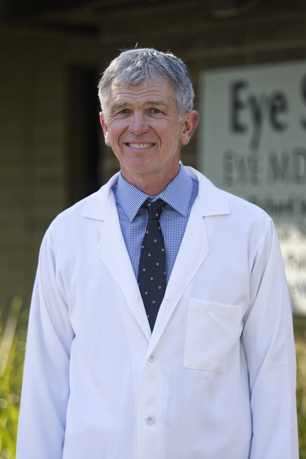

Richard A. Jones, M.D.
Board-certified ophthalmologist
Cataract and refractive surgery
Former Chief of Ophthalmology, Mercy General and Sutter General Hospitals
David T. Kira, M.D.
Board-certified ophthalmologist
Laser cataract surgery and glaucoma
Clinical Instructor of Ophthalmology, UC Davis Health

Shawn Palmer, M.D.
Board-certified ophthalmologist
Cataract surgery and medical eye care
Sactown Magazine Top Doctors 2026 · Former U.S. Navy flight surgeon